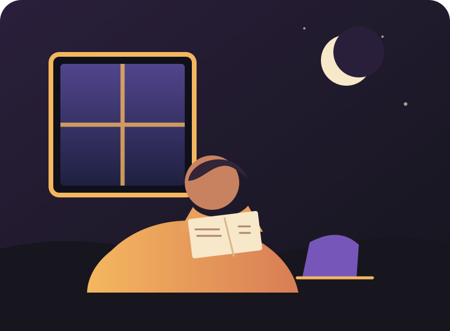

Расскажи о себе
Несколько честных ответов помогут нам подобрать компанию по настроению.
клуб для тех, кто читает с чувством
Night Shelf — маленький клуб больших историй. Заполни анкету, расскажи о своих читательских привычках и получи приглашение на ближайший разговор.

как это работает
Несколько честных ответов помогут нам подобрать компанию по настроению.
Мы соберём мини-портрет читателя и найдём книги, которые могут тебя удивить.
Раз в месяц собираемся в тихом месте, чтобы обсуждать прочитанное без спешки.
«Книги иногда знакомят нас друг с другом быстрее, чем имена.»— заметка с последней встречи